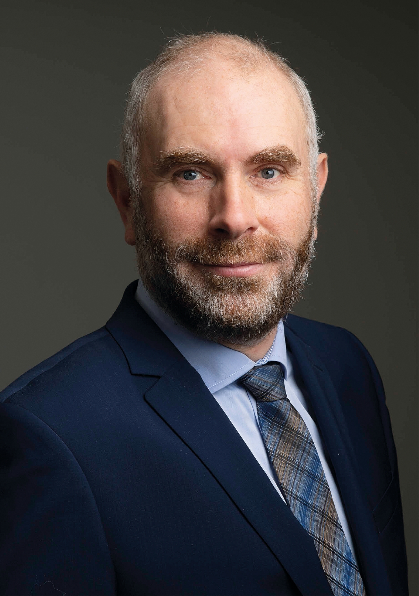
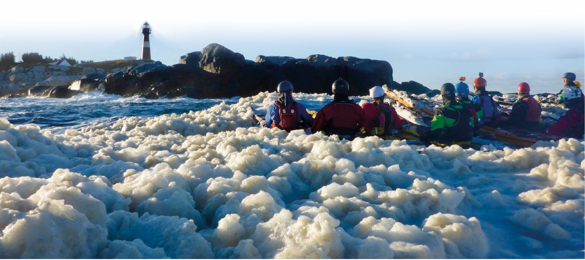

Kjell Hauge kommer ombord:
Ta kysten i bruk!
–
Jeg ser på meg selv som en operativ jurist; vi må ha forståelse for lovverket og intensjonene, men
samtidig se mulighetene i regelverket, sier Kjell Hauge.
•••
Av Dag Bakka jr. dag@kystrederiene.no
Han er i ferd med å avslutte sin stil-
ling i Nor Lines/Samskip, og vil være
på plass i Kystrederiene like over
nyttår. Her vil han bringe inn juridisk
fagkompetanse i en erfaren og tverr-
faglig organisasjon.
Hvorfor Kystrederiene?
–
Gjennom noen år i departementet,
Det Stavangerske Dampskipsselskap,
Nor Lines og nå sist i Samskip har jeg
sett hva sjøveien kan brukes til. Vi
hører ofte politiske festtaler, men i
praksis er det vanskelig å få til for-
bedrede rammer til sjøtransport. Jeg
har mine tanker om å gjøre ting på en
bedre måte, få til samarbeid mellom
havner og kystnæringer, og finne nye
og bedre løsninger for våre med-
lemmer. Kystrederiene er en inter-
esseorganisasjon for næringen; vi har
et samfunnsoppdrag: Ta kysten mer i
bruk!
Kjell Hauge er født og oppvokst i
Stavanger, studerte i Bergen og med
studier i europeisk rett ved Åbo Aka-
demi. Han kom til å spesialisere seg
på avtalerett, avtaler og forhand-
linger. Det har det vært mye av i Nor
Lines, i hans tidligere stillinger i
departement og som advokat. Han
har også undervist i emnet på
Universitetet i Stavanger som første-
amanuensis II. Vi er sikre på at Kjells
spesialisering og erfaring innenfor
avtalerett, avtaler og forhandlinger vil
bli svært verdifullt for foreningen og
verdsatt av medlemmene.
I den nye jobben i Kystrederiene vil
han bli leder av administrasjonen på
arbeidsgiver- og forsikringssiden og
samtidig faglig instans i lovsaker,
høringer og diskusjoner om regelfor-
ståelse generelt. Arbeidsgiversiden,
med arbeidsrett, tariffspørsmål og
forhandlinger vil gi nok å henge fing-
rene i. Videre vil foreningens ulike
forsikringsordninger, CEFOR med
sjøforsikringsplan og IMO bli en del
av
ansvaret som advokat i Kyst-
rederiene.
Også på privatfronten har Kjell tatt
kysten i bruk, bokstavelig talt, som en
engasjert kajakkpadler.
–
Jeg er i
dybden på ting, sier han, og det
gjelder definitivt i kajakkpadling. Det
spenner fra stille naturopplevelser
gjennom sivbevokste innsjøer til tøffe
turer i åpent farvann. I Stavanger
Kajakklubb holder kan kurs for både
nybegynnere og viderekomne.
I jussen er det også viktig å trives i
dybden, med detaljene. I komplekse
saker er det nødvendig med god
kunnskap om reglene for å kunne gi
de gode rådene. En vil se på mulig-
heter og forhåpentligvis få til nye og
bedre løsninger for medlemmene.
Kjell ser fram til å komme inn i
miljøet i Kystrederiene og bidra med
sin kompetanse. Det er en variert og
spennende næring som spiller på
kystnæringer og infrastruktur. En del
tanker har han med seg fra Nor Lines
og tidligere arbeidserfaringer. Nå
venter nye utfordringer i en ny rolle,
hvor han vil ha mye å bidra med.

Kjell er en engasjert kajakkpadler.
Foto: privat.